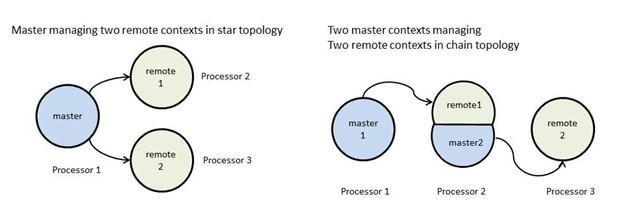
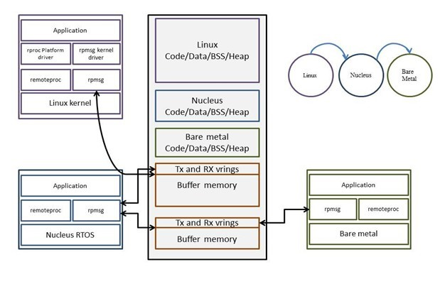

System Wide Considerations
AMP systems could either be supervised (using a hypervisor to enforce isolation and resource virtualization) or unsupervised (modifying each participating software context to ensure best- effort isolation and cooperative usage of shared resources). With unsupervised AMP systems, there is no strict isolation or supervision of shared resource usage.
Take the following system-wide considerations into account to develop unsupervised AMP systems using the OpenAMP framework.
Determine system architecture/topology
The OpenAMP framework implicitly assumes master-slave (remote) system architecture. The topology for the master-slave (remote) architecture should be determined; either star, chain, or a combination. The following figure shows some simple use cases.

Case 1 — A single master software context on processor 1 controlling life cycle and communicating with two independent remote software contexts on processors 2 and 3, in star topology,
Case 2 — Master software context 1 on processor 1 brings up remote software context 1 on processor 2. This context acts as master software context 2 for remote software context 2 on processor 3, in chain topology.
Determine system and IO resource partitioning
Various OSs, RTOSs, and bare metal environments have their own preferred mechanisms for discovering platform-specific information such as available RAM memory, available peripheral IO resources (their memory-mapped IO region), clocks, interrupt resources, and so forth.
For example, the Linux kernel uses device trees and bare metal environment typically define platform-specific device information in headers or dedicated data structures that would be compiled into the application.
To ensure mutually-exclusive usage of unshared system (memory) and IO resources (peripherals) between the participating software environments in an AMP system, you are required to partition the resources so that each software environment is only aware of the resources that are available to it. This would involve, for example, removing unused resource nodes and modifying the available memory definitions from the device tree sources, platform definition files, headers, and so forth, to ensure best-effort partitioning of system resources.
Determine memory layout
For the purpose of this description, assume you are using the Zynq SOC used in AMP system architecture with SMP Linux running on the dual Cortex A9 cores, and a RTOS on one instance of Microblaze soft core, and bare metal on another instance of Microblaze soft core in the fabric.
To develop an AMP system using the OpenAMP Framework, it is important to determine the memory regions that would be owned and shared between each of the participating software environments in the AMP system. For example, in a configuration such as this, the memory address ranges owned (for code/data/bss/heap) by each participating OS or bare metal context, and the shared memory regions to be used by IPC mechanisms (virtio rings and memory for data buffers) needs to be determined. Memory alignment requirements should be taken into consideration while making this determination.
The following image illustrates the memory layout for Linux master/RTOS-based remote application, and RTOS-based master/bare metal-based remote application in chain configuration. Determinint the Memory Layout in an AMP System

Ensure cooperative usage of shared resources between software environments in the AMP system
For the purpose of this discussion, assume you are using a Linux master/bare metal- based remote system configuration.
The interrupt controller is typically a shared resource in multicore SoCs. It is general practice for OSs to reset and initialize (clear and disable all interrupts) the interrupt controller during their boot sequence given the general assumption that the OS would own the entire system. This will not work in AMP systems; if an OS in remote software context resets and initializes the interrupt controller, it would catastrophically break the master software contexts run time since the master context could already be using the interrupt controller to manage its interrupt resources. Therefore, remote software environments should be patched such that they cooperatively use the interrupt controller (for example, do not reset/clear/disable all interrupts blindly but initialize only the interrupts that belong to the remote context). Ensure the timer peripheral used by the
remote OS/RTOS context is different from the one used by the master software context so the individual run-times do not interfere with each other.